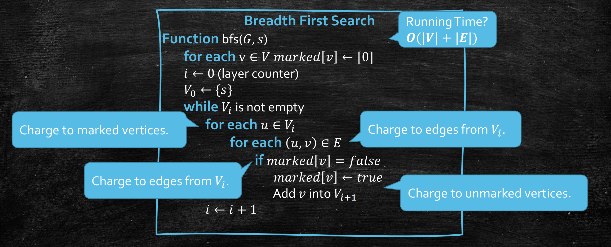
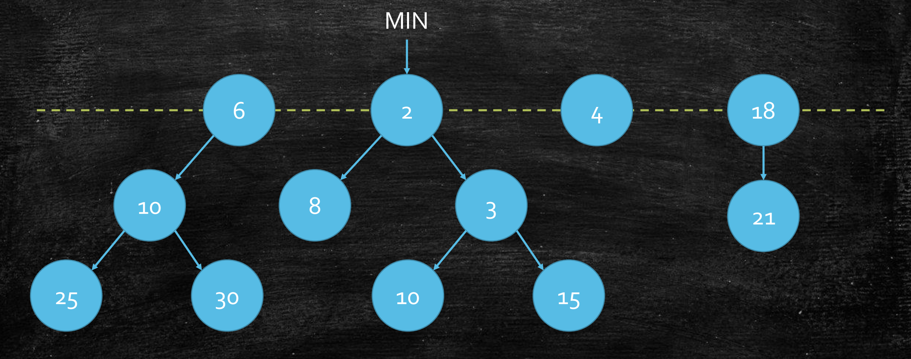

Last updated on May 5, 2025 pm
本文为SJTU-AI2615算法课程的知识点复习，主要复习内容为两种最短路径算法——广度优先搜索（BFS）和 Dijkstra 算法，以及 Fibonacci 堆在 Dijkstra 算法优化中的应用。
基本概念
-
路径定义
- 有向图中从顶点u到v的路径是边序列，路径长度为边数（无权图）或边权之和（有权图）。
- 最短路径：所有可能路径中长度最小的路径。
-
顶点间距离
- d(u,v)：从u到v的最短路径长度。
-
单源最短路径问题
- 输入：以邻接表表示的有向图G(V,E)、源点s。
- 输出：d(s,v)，即s到各个顶点的最短距离。
BFS算法
算法思想
- 分层扩展：从源点s出发，逐层向外探索顶点。
- Vk：距离s为k的顶点集合。
- 由Vk中顶点的邻接点构造出Vk+1。
- 从V0,V1,V2,…开始逐层访问。
算法设计及分析

- 时间复杂度：O(∣V∣+∣E∣)。
- 路径重建：记录前驱数组
pre[]，可以从终点v回溯到s，逆序得到最短路径。
Dijkstra算法
适用条件
算法思想
- 贪心策略：
- 每次选择当前距离最小的顶点，确定其最短路径。
- 维护最短路径树 (SPT)，逐步扩展顶点集合。
算法设计及分析

正确性证明
- 考虑将v加入一棵小SPT，构建更大的SPT。
- 每次选择顶点v为distT(v)最小者，要证distT(v)=dist(v)。
- 反证法：若存在更短路径s→…x→v (x∈/T)，那么有distT(x)<distT(v)，矛盾。
时间复杂度
- 共∣V∣轮FindMin，∣E∣轮Update。
- 数组：O(∣V∣2+∣E∣)。
- 二叉堆：O((∣V∣+∣E∣)log∣V∣)。
- 斐波那契堆：O(∣E∣+∣V∣log∣V∣)。

斐波那契堆
结构概述
- 多棵最小堆树：允许存在多棵以根节点为顶的最小堆树
- 根链表：所有根节点通过双向循环链表连接
- 最小指针：始终指向当前键值最小的根节点

操作步骤
PopMin
移除最小根节点 → 合并度数相同的树 → 更新最小指针
Update
键值减少 (→ 节点剪切到根链表 → 级联剪切)
核心结论
- 根度数为 k 的树至少包含 ∑i=1kfib[i]=O(Ck) 个节点
- 最大度数 D 和根节点数 t 均不超过 O(logn)
均摊时间复杂度分析（势能法）
势能函数定义
Φ=t+2m
- t：当前根节点数量
- m：当前被标记的非根节点数量
关键操作分析
-
Update:
- 实际时间：C=O(#CC+1)，#CC 为级联剪切次数
- Δt=#CC+1，Δm=−#CC+1
- C^=C+δ⋅ΔΦ=O(#CC+1)+δ⋅(−#CC+3)=O(1)
-
PopMin:
- 实际时间：C=O(t−+D)
- Δt≤D−(t−+D)=−t−
- C^=C+δ⋅ΔΦ≤O(t−+D)−δ⋅t−=O(D)=O(logn)